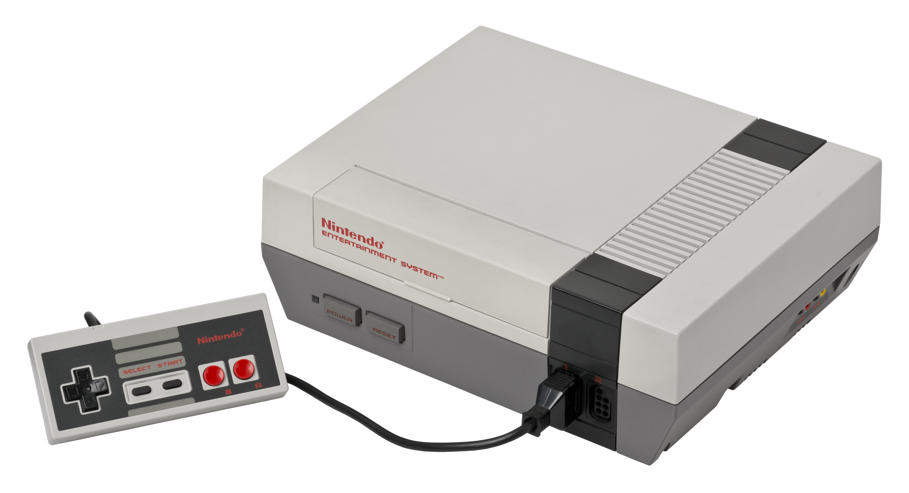

Top 10 SNES/NES Games
Welcome to the ultimate countdown of 8-bit and 16-bit classics. With hundreds of titles across the NES and SNES libraries, finding the games that truly hold up can feel like a quest of its own. This site cuts through the clutter to bring you two curated lists: my Top 10 Single-Player adventures for solo marathon sessions and my Top 10 2-Player favorites built for couch co-op competition. Dive into each ranking to explore game breakdowns, console highlights, and why these twenty timeless cartridges still deserve a spot on your screen today.


My Experience
I have been playing old Nintendo games basically my whole life. I love the challenge that they present and the nostalgia that they bring. The way I play these games is by emulating them on my Wii. In my personal opinion, the Wii is the way to go because it's controler provides the necesary buttons in a comfortable fit for the NES, and you've always got the Classic Controller to attatch for the SNES games. I'm a really big fan of side scrolling platformers, those are my personal favorite, but I have tried to give a variety of games or alternatives for those looking for something else. (Pro tip: look up the controls for the games you are playing, some aren't always self explanitory)